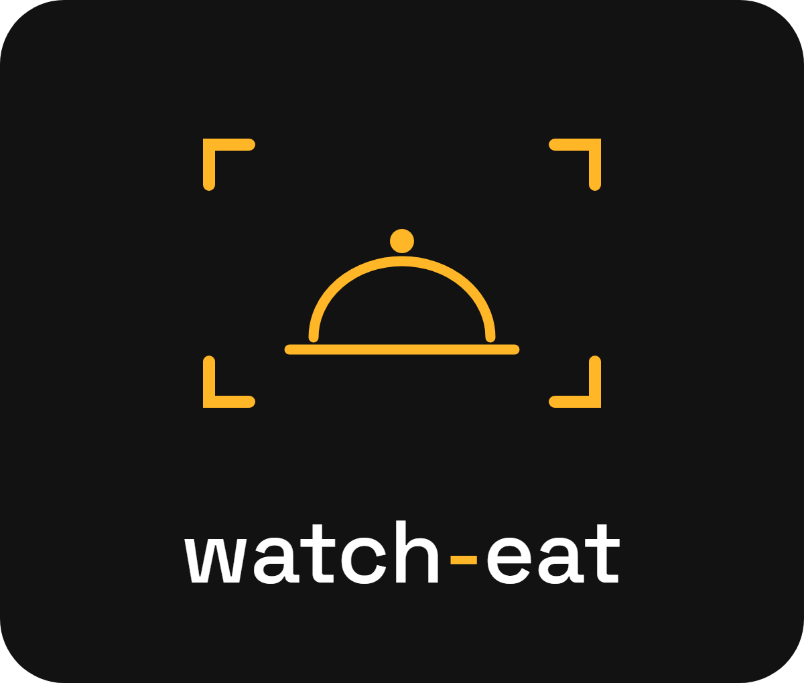
ΥΛΙΚΟ ΠΑΡΟΥΣΙΑΣΗΣΨηφιακό μενού με QR, σε 10 γλώσσες, όπου ο πελάτης βλέπει κάθε πιάτο σε πραγματικό μέγεθος πριν το παραγγείλει. Εδώ είναι όλο το υλικό: φυλλάδιο, αναφορά στατιστικών, λογότυπο και εικόνες.
7 σελίδες: τι είναι, πώς το ζει ο πελάτης, τι περιλαμβάνει, πώς ξεκινάμε, το πακέτο. Σύρε δεξιά για όλες τις σελίδες.
Τι θα λαμβάνει κάθε μαγαζί κάθε μήνα. Δείγμα με ενδεικτικά νούμερα.
Η καμπάνα σερβιρίσματος μέσα σε κάδρο κάμερας. Μαύρο #121212 και κίτρινο #FFB627.
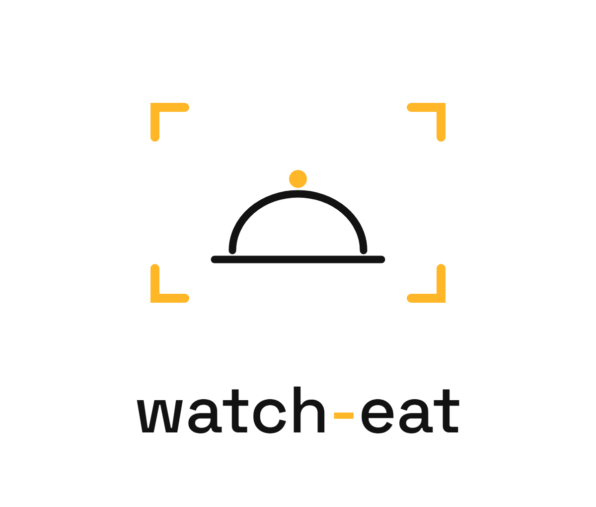
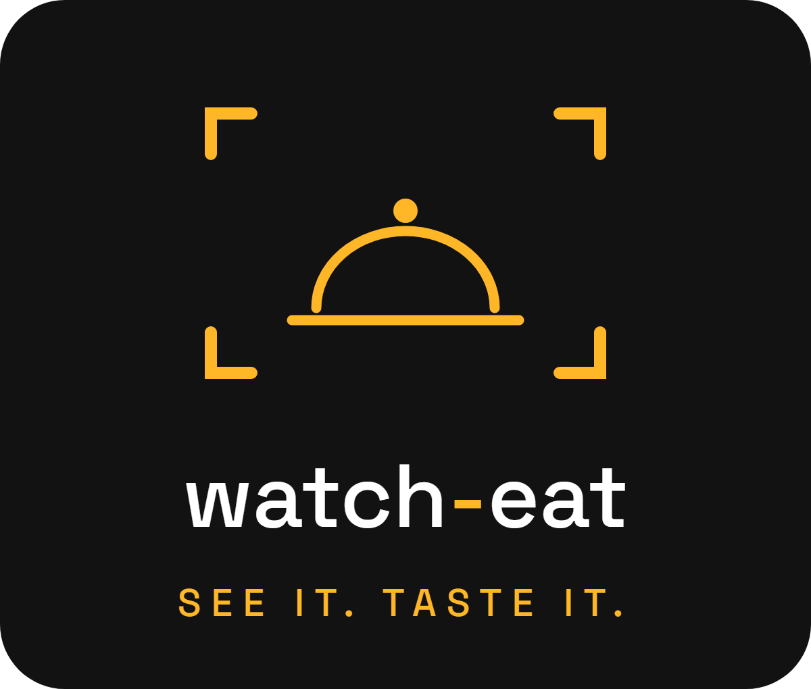
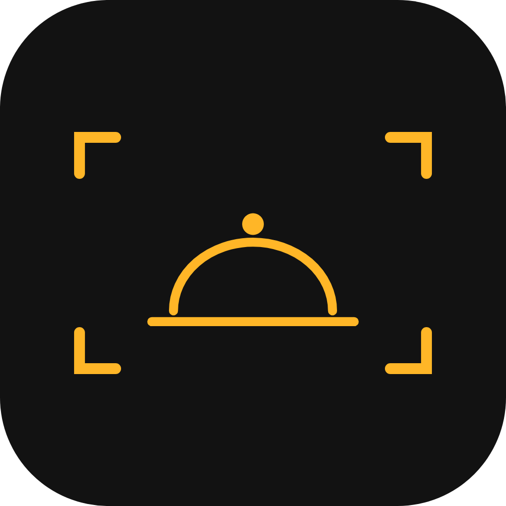
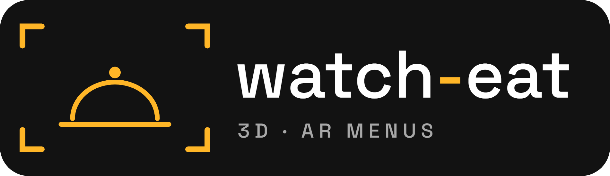
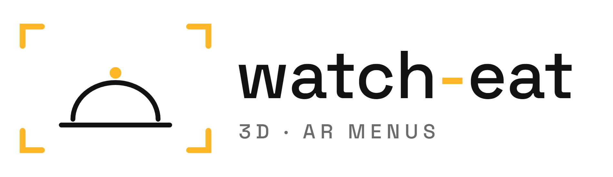
Έτσι βλέπει ο πελάτης το πιάτο μέσα από την κάμερα, σε πραγματικό μέγεθος.
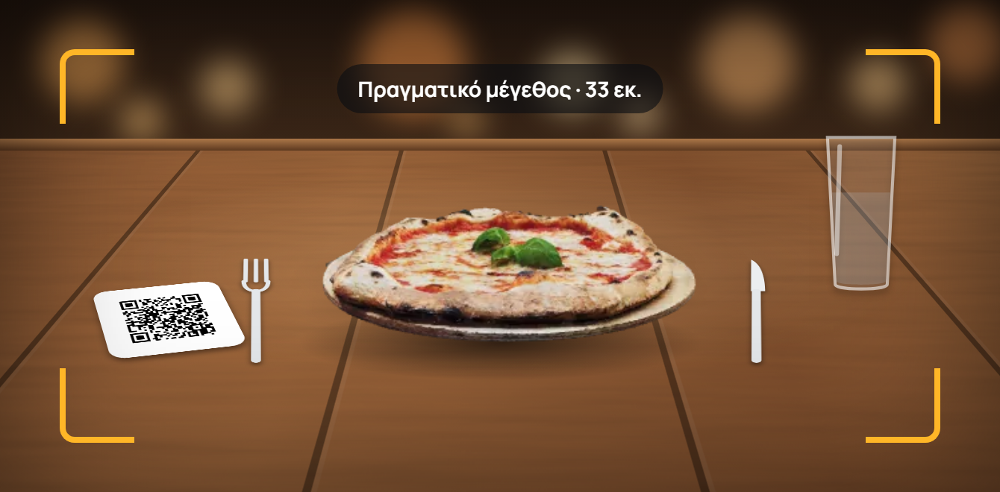
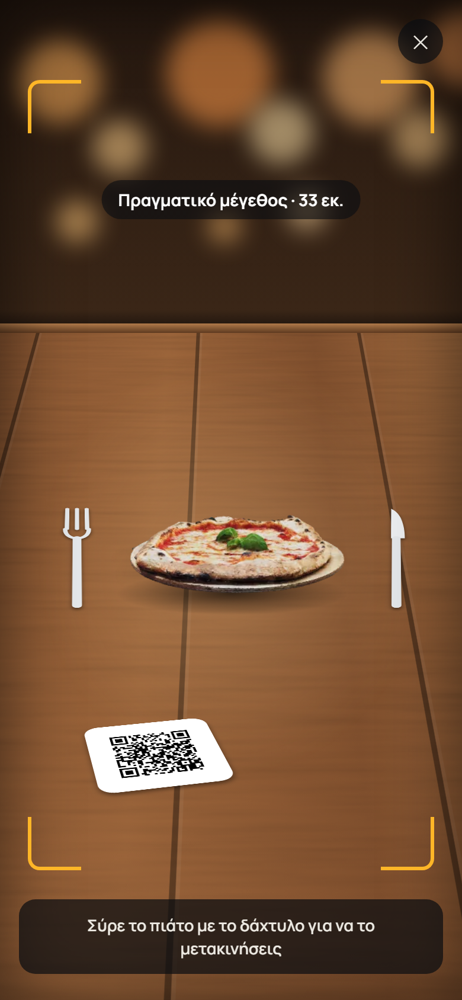
63 σήματα για κάθε είδος μαγαζιού, τα 14 αλλεργιογόνα της ΕΕ και τα στοιχεία κάθε πιάτου.
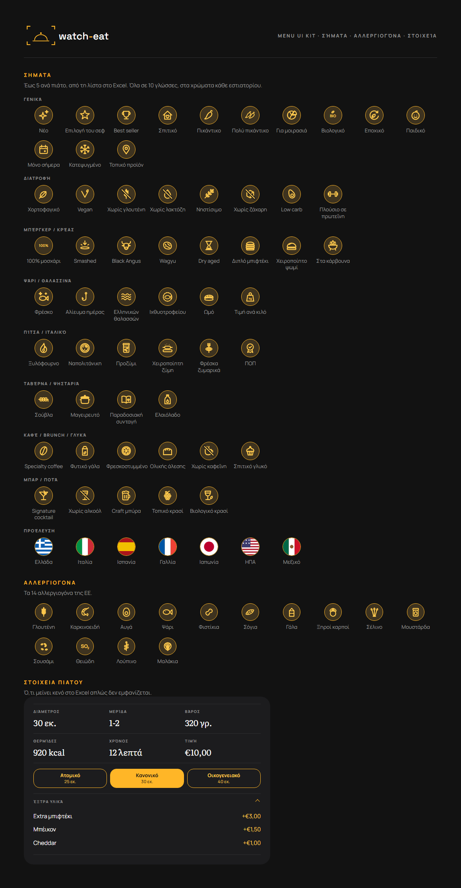
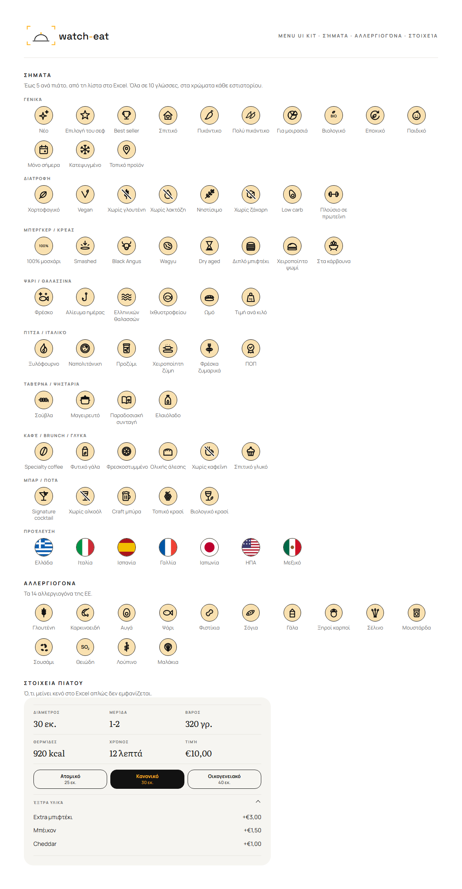
Σχέδια που δοκιμάσαμε στην πορεία.
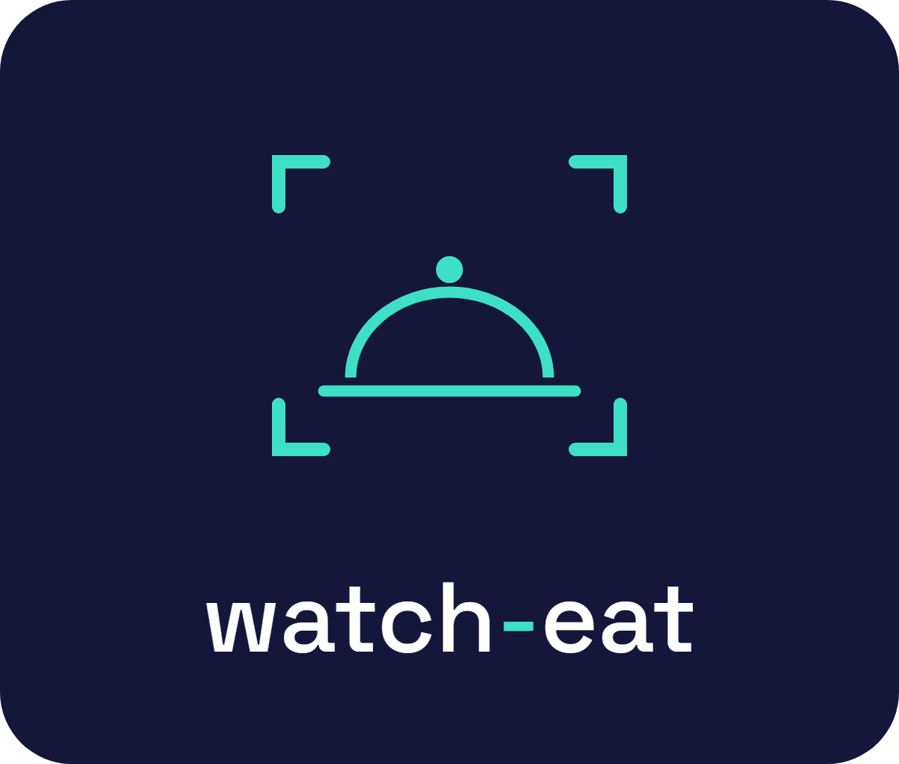
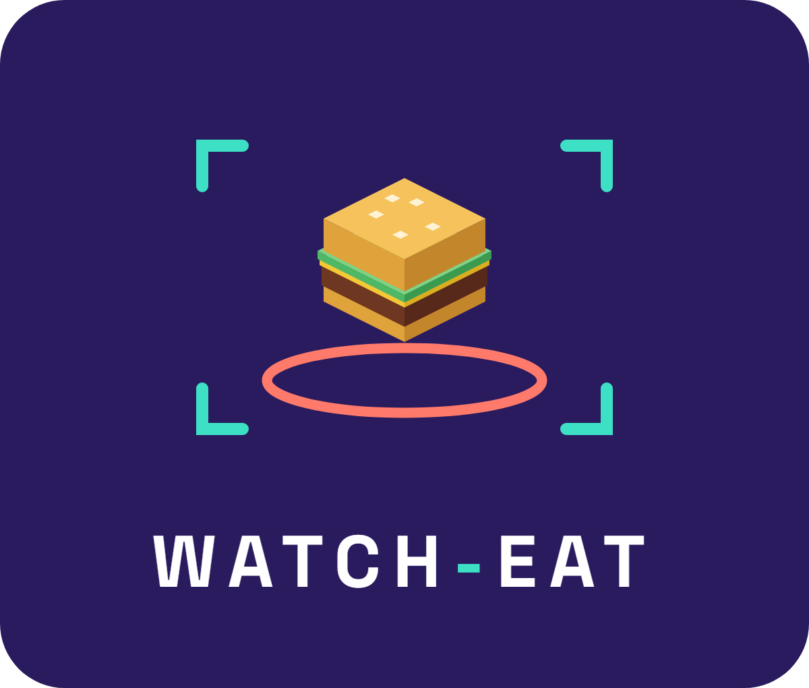
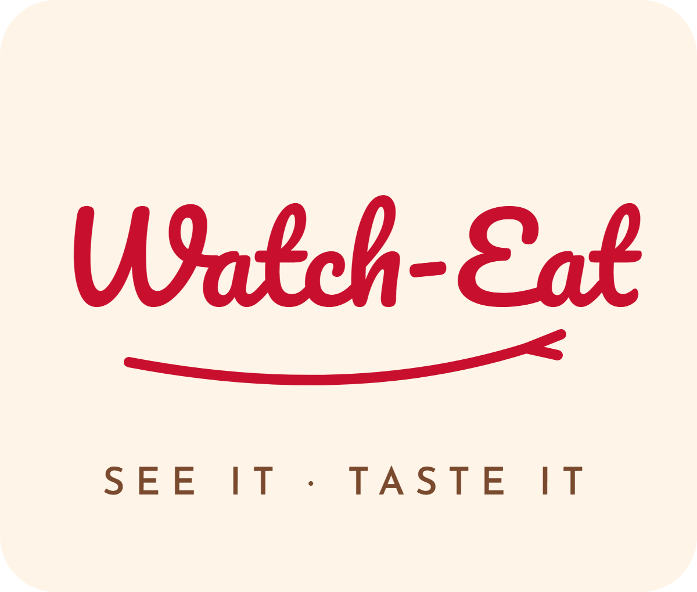
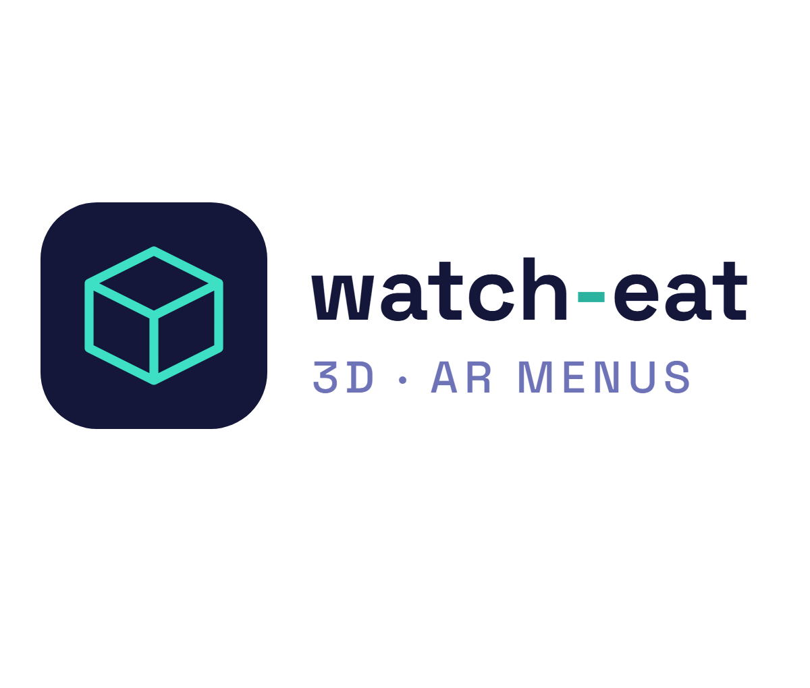